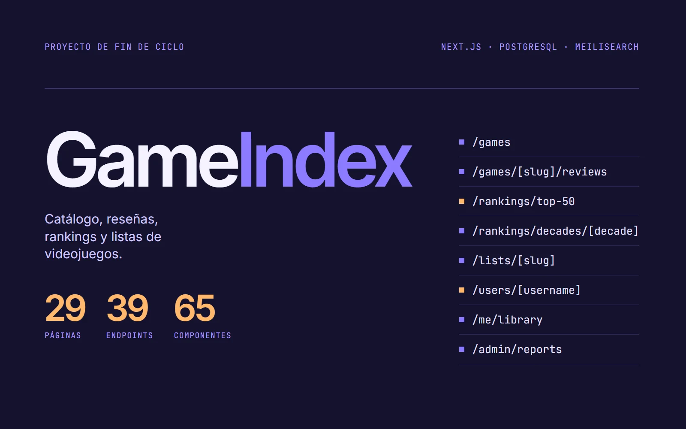
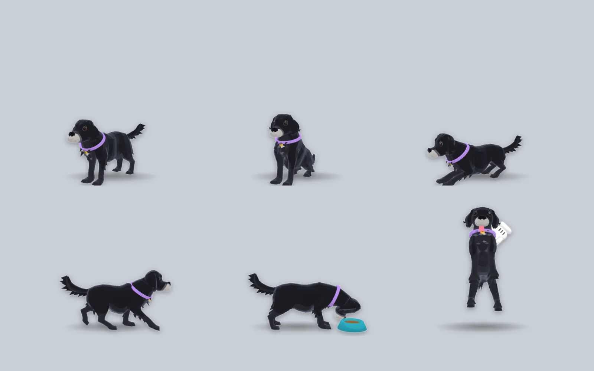

01
GameIndex — Reseñas de videojuegos
2026Proyecto de fin de ciclo · Full stack
Disponible para nuevas oportunidades
Construyo aplicaciones móviles, web y de escritorio, del modelo de datos a la interfaz.
Dos proyectos de mi GitHub: una plataforma web y una aplicación de escritorio. Todo el código es público.

Proyecto de fin de ciclo · Full stack

Proyecto personal · Aplicación de escritorio
Desarrollo aplicaciones completas: base de datos, API e interfaz.
Soy Técnico Superior en Desarrollo de Aplicaciones Multiplataforma (CPR Cebem, 2026). Antes me formé como Técnico en Instalaciones de Telecomunicaciones, así que también conozco el lado del hardware.
En mis prácticas en Siweb AI Solutions desarrollé dos apps móviles con React Native: NexusCall, de llamadas, y NutrIA, de fitness y nutrición, con MySQL y Supabase.
Como proyecto de fin de ciclo construí GameIndex, una plataforma de reseñas de videojuegos con Next.js, TypeScript y PostgreSQL. Ahora trabajo en DesktopFriend, una mascota 3D para el escritorio de Windows.
Dos periodos de prácticas: desarrollo de apps móviles y soporte técnico.
—
Siweb AI Solutions · Vigo
—
AlexLibera SAT · Redondela
—
CPR Cebem · Incluye Odoo (ERP) y CI/CD con GitHub Actions
Ciclo superior
—
IES Pedro Floriani
Ciclo medio
Busco mi primer puesto como desarrollador junior. Si tienes una vacante o un proyecto en el que pueda aportar, escríbeme.
Redondela, Pontevedra
Carné B y vehículo propio.